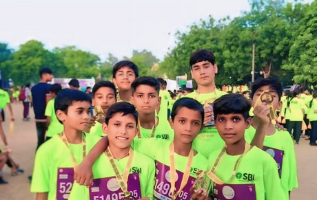

National Achievement – Proud Moment for Our School! :
Winning at the national level is a remarkable achievement for primary school students. It reflects not only their academic or extracurricular excellence but also their dedication, hard work, and resilience. These students have shown exceptional skills, creativity, and determination to compete with peers from all over the country. Their success inspires others to dream big and strive for excellence, proving that with passion and perseverance, even the youngest minds can make a significant impact.Celebrating their achievements encourages a spirit of healthy competition and sets the stage for future success in their educational journeys.